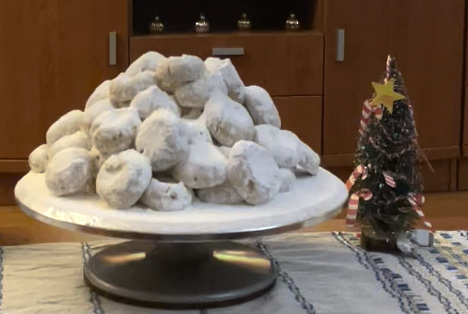

Kourambiedes

Description
These shortbread-like cookies, with the characteristic aromas of rose water and roasted almonds, literally melt in your mouth.
Kourambiedes originate in the Middle East and were brought to Greece during the Ottoman occupation. They are a typical treat at many households in Greece before, during and after Christmas.
Recipe by live kitchen channel
Ingredients
- 800 g plain flour
- 200 g powdered sugar
- 500 g butter(room temperature)
- 2 vanilla
- 100 g almonds
- 300 g powdered sugar
- 1 tbsp cornstarch
Steps
- We start the recipe and roast the almond fillets in a baking pan at 170 C for 7 minutes.
- We continue and after we have left the butter at room temperature for 3-4 hours, put it and beat it at high speed in the mixer together with the powdered sugar for about 10 minutes.
- Take the almonds out of the oven and put them in the freezer for a while because they should be cold when you add them to the mixture.
- As soon as 10 minutes have passed and after we have left the almonds in the freezer to cool, take them out and put them together with the vanillin in the mixer. We continue beating for another 1 minute.
- After a minute, we take the mixture and slowly add the all purpose flour passing it through a sieve and mix with a mariz, not with our hands.
- As soon as we have poured all the flour, we measure 20 g to make each kourambie and after making it into a ball very gently with our palms (we wear gloves because our hands are hot) press a little in the middle of each kourabie and put it in the pan.
- We do the same procedure with all the kourabiedes and bake them in a preheated oven in the air for 12-13 minutes at 170 C.
- After baking them all, let them cool completely and sprinkle them with powdered sugar along with a tablespoon of corn flour. We sprinkle them all and the kourabiedes are ready!